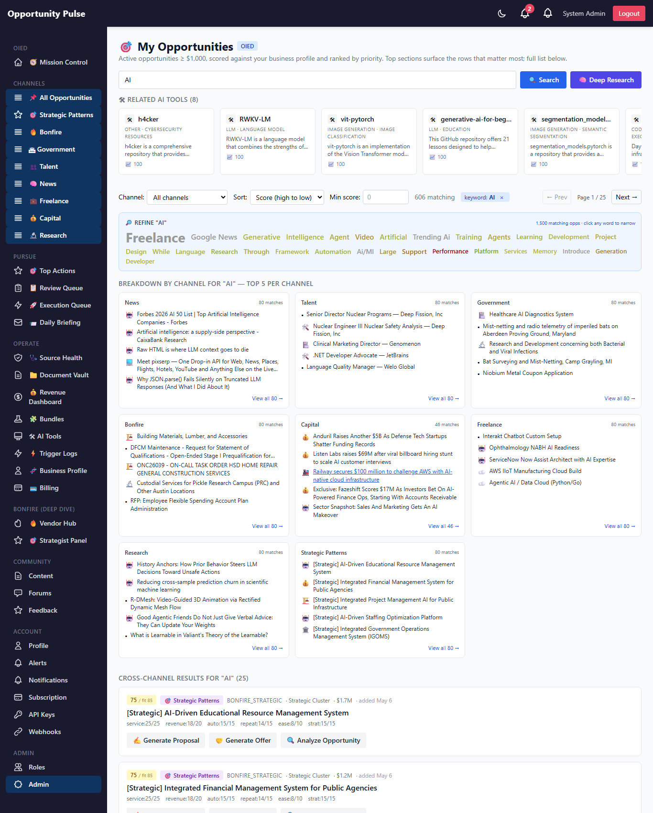
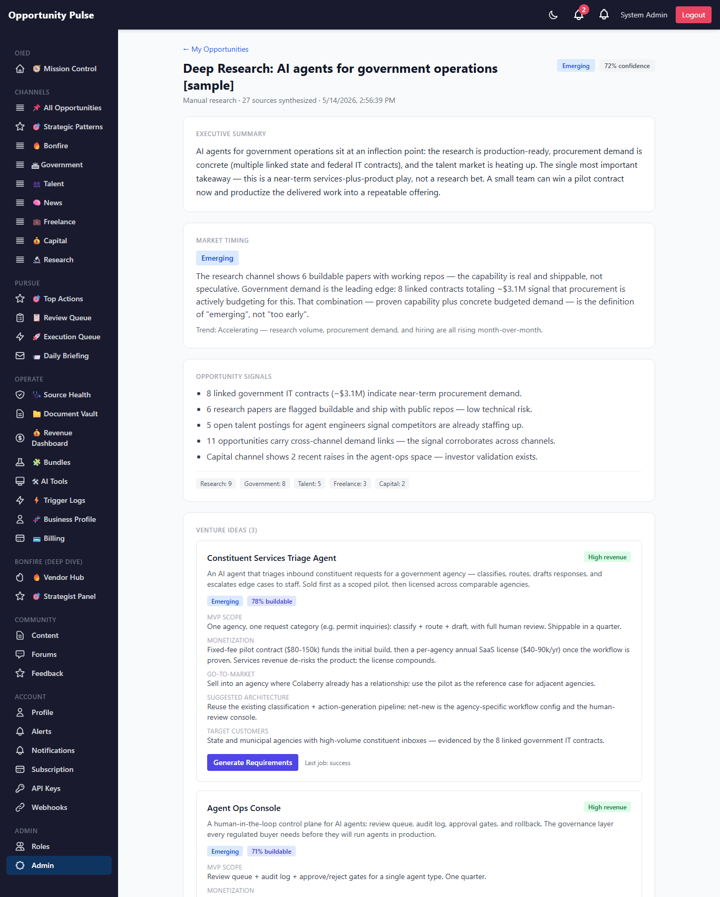
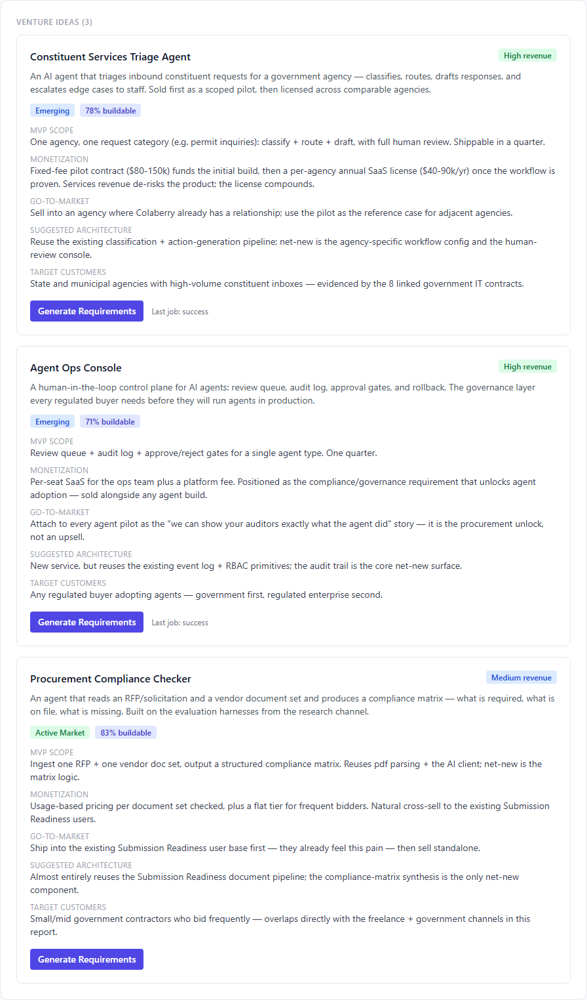
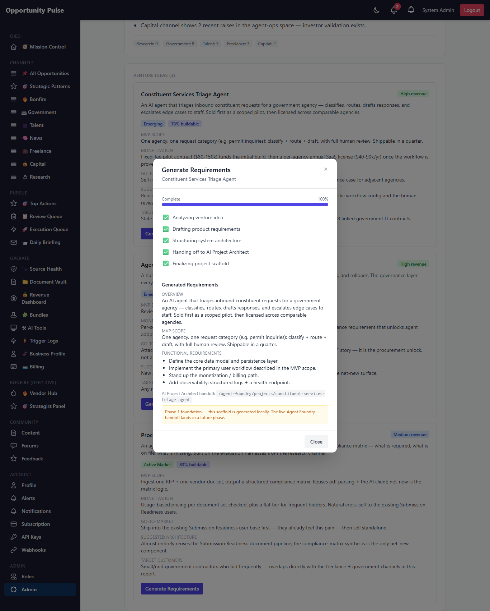

Deep Research Intelligence Engine — Phase 1
Foundation · 2026-05-14 · commit 3229913 · all 1,570 backend tests passing
This is Phase 1 of turning Opportunity Pulse from an opportunity aggregator into an AI venture intelligence & execution operating system. The new capability is called Deep Research: it reads across every channel — research, news, government, talent, freelance, capital, strategic patterns — and synthesizes them into venture opportunities, commercialization strategies, MVP recommendations, and a bridge to requirements generation.
Phase 1 deliberately builds the foundation, not the full autonomous system. It establishes the data model, the synthesis pipeline, the report experience, the requirements-generation bridge, the daily-scan infrastructure, and the email briefing foundation — each as a real, working, independently-extensible piece.
4 tables live 6 services 5 API routes report page + modal Agent Foundry: foundation seam
The business objective
Every existing channel in Opportunity Pulse answers "what opportunities exist?" Deep Research answers a harder question: "given everything we can see, what should we build, who would buy it, and how do we ship it?"
The system synthesizes the seven channels into venture opportunities, commercialization strategies, MVP recommendations, monetization plans, and execution recommendations — supporting (1) manual deep research from the My Opportunities search, (2) automated once-per-day strategic scans, (3) daily executive email briefings, (4) an AI Project Architect integration for requirements generation, and (5) long-running generation jobs with progress tracking.
Phase 1 lays every one of those tracks. It does not attempt the full autonomous venture generation system — that is a deliberate later phase. The bias here is architecture quality over feature quantity: modular services, deterministic behavior, observable jobs, and a single clean seam where the external Agent Foundry integration will plug in.
Your feedback on the objective & Phase 1 scope
What shipped in Phase 1
| Requirement | Delivered |
|---|---|
| Deep Research button | On My Opportunities, next to Search — uses the current search term + filtered results |
| 4 database tables | deep_research_reports, venture_ideas, project_generation_jobs, daily_research_scans — migrated live on prod |
| 6 backend services | orchestrator, strategic synthesis, venture idea generator, project architect bridge, daily scheduler, email briefing |
| 5 API routes | run, get report, status poll, generate requirements, job status poll |
| Report page | /admin/deep-research/:id — a 10-section executive intelligence dashboard |
| Requirements generation flow | "Generate Requirements" on each venture idea → job + phase-tracked progress modal |
| Daily scan infrastructure | opt-in cron, configurable topics, per-topic scan log |
| Email briefing foundation | executive briefing HTML template + conservative (opt-in) delivery |
Feedback on the shipped scope
The synthesis pipeline
A deep research run is a short, deterministic pipeline. The orchestrator owns the report lifecycle; the two AI steps are isolated, single-responsibility services it delegates to.
Failure-first: step 2 is the hard gate — if synthesis fails the report is marked
failed (the row is still persisted — observable, never a half-write). Step 3 is soft —
if idea generation fails (e.g. the AI provider 429s) the report degrades to partial and
keeps the strategic narrative, which is still useful on its own.
Feedback on the pipeline design
Workflow — manual deep research
My Opportunities ──[ search / filter ]──▶ click "Deep Research"
│
▼
POST /api/v1/deep-research/run { searchTerm, opportunityIds }
│
▼
deepResearch.runDeepResearch()
├─ create AnalysisRun + deep_research_report (status: running) ← observable immediately
├─ fetchCandidates() → aggregateContext()
├─ strategySynthesis.synthesize(context) [AI · hard gate]
├─ ventureIdeaGenerator.generateVentureIdeas() [AI · soft]
├─ persist venture_ideas rows
└─ update report (status: success | partial | failed)
│
▼
redirect ──▶ /admin/deep-research/:id (report page)
The report row is created before synthesis runs, so an in-flight run is observable and the
report page can poll /:id/status while it completes.
Workflow — requirements generation
Venture idea card ──[ click "Generate Requirements" ]──▶
│
▼
POST /api/v1/deep-research/:id/generate-requirements { ventureIdeaId }
│
▼
projectArchitectBridge.createJob()
├─ idempotency guard: existing queued/running job? → return it
├─ create project_generation_job (status: queued)
└─ processJob(id) ── fire-and-forget ──┐
│ (HTTP returns the queued job) │
▼ ▼
modal polls GET /jobs/:id/status processJob walks 5 phases:
every 1.2s analyzing_venture
drafting_requirements
structuring_architecture
handoff_to_architect ← the Agent Foundry seam
finalizing
│
▼
status: success, progress 100%,
requirements_json persisted
Polling today, SSE-ready tomorrow: the job model already persists phase + progress, so a future SSE upgrade changes only the modal component — not the data model or the bridge.
Workflow — daily automated scan
cron (08:00 UTC, opt-in: DEEP_RESEARCH_SCAN_ENABLED=true)
│
▼
dailyResearchScheduler.runDailyScan()
for each topic in DEEP_RESEARCH_SCAN_TOPICS (configurable):
├─ create daily_research_scan row (status: running)
├─ deepResearch.runDeepResearch({ origin: 'daily_scan' })
└─ update scan row (status: success | failed) ← one failing topic never aborts the rest
│
▼
emailBriefing.sendDailyBriefing(reports)
└─ conservative: only emails if DEEP_RESEARCH_BRIEFING_TO is set;
otherwise renders the briefing and logs { sent: false }
Both the scan cron and email delivery are opt-in and default OFF — same posture as every other scheduled job in the codebase. The logic is fully unit-tested regardless of the flags.
Feedback on the three workflows
Architecture — the six services
Everything lives under backend/src/deepResearch/, following the repo's feature-folder
convention. Each service has one responsibility — no God service, no tangled orchestration.
| Service | Responsibility | Touches AI? | Touches DB? |
|---|---|---|---|
deepResearch.service | Orchestrator. Aggregates + normalizes cross-channel data, owns the report lifecycle, delegates the AI work. | No (delegates) | Yes |
strategySynthesis.service | The executive narrative — exec summary, market stage, signals, gov alignment, MVP directions. One AI call. | Yes | No |
ventureIdeaGenerator.service | The venture-idea shortlist — monetization, buildability, revenue band, GTM. One AI call. | Yes | No |
projectArchitectBridge.service | The project_generation_jobs lifecycle — phase walker, progress tracking, the Agent Foundry seam. | No | Yes |
dailyResearchScheduler.service | The opt-in once-per-day scan: per-topic runs, scan logging, cron registration. | No (delegates) | Yes |
emailBriefing.service | The executive briefing email — HTML template + conservative delivery. | No | No |
The split between strategySynthesis ("what does this mean") and
ventureIdeaGenerator ("what would we build") is deliberate — two responsibilities, two
prompts, two services. Either can be tuned or swapped without touching the other or the orchestrator.
The Agent Foundry seam
The spec calls for an "AI Project Architect integration." That system is Agent Foundry — a sibling repository with no API contract exposed yet. Rather than fake the integration or block on it, Phase 1 builds the foundation: the entire job lifecycle is real, and the external handoff is a single, clearly-marked seam.
projectArchitectBridge._dispatchToAgentFoundry(ventureIdea)Phase 1 generates a structured requirements scaffold deterministically from the venture idea — real, useful output (overview, MVP scope, suggested architecture, monetization, functional requirement skeleton), not a fake. When Agent Foundry exposes an API, only this one function changes — its return contract (
{ projectSlug, architectUrl, requirements }) stays the same, and the
job model, phase walker, progress tracking, and polling API are all untouched.
This is the "extensibility over feature quantity" principle in practice: the hard part (observable, retry-safe, phase-tracked jobs) is done; the external call is isolated to one swappable function.
Feedback on the Agent Foundry approach
Database schema
Migration 20260514000001-create-deep-research-tables.js — four tables, applied live on prod.
deep_research_reports one synthesized report per search term / scan topic ├─ search_term, status (running|success|partial|failed) ├─ executive_summary, market_stage, confidence_score ├─ report_json (JSONB) the full structured report ├─ source_count, origin (manual|daily_scan) └─ organization_id, created_by, analysis_run_id venture_ideas one report → many venture ideas ├─ report_id (FK) ├─ title, description, monetization_strategy ├─ market_timing, buildability_score, revenue_potential ├─ mvp_scope, gtm_summary └─ metadata (JSONB) suggested_architecture, target_customers project_generation_jobs a venture idea handed off for requirements generation ├─ venture_idea_id (FK), report_id ├─ status (queued|running|success|failed), progress_percent ├─ current_phase, phases (JSONB) the phase log ├─ project_slug, architect_url the Agent Foundry handoff result └─ requirements_json (JSONB) daily_research_scans the once-per-day automated scan log ├─ scan_topic, report_id (FK, nullable) └─ status (running|success|failed|skipped)
All four use the repo's standard conventions: integer PKs, JSONB for evolving payloads, underscored columns, indexed on the columns the read paths actually use. deep_research_reports venture_ideas project_generation_jobs daily_research_scans
API routes
All under /api/v1/deep-research, admin-only (same access posture as the other OIED action
endpoints). The spec drafted /api/deep-research/...; the repo's consistent convention is
/api/v1/*, so the routes follow that.
POST /api/v1/deep-research/run run a synthesis { searchTerm?, opportunityIds? }
GET /api/v1/deep-research/:id full report + venture ideas + jobs
GET /api/v1/deep-research/:id/status lightweight status poll (loading state)
POST /api/v1/deep-research/:id/generate-requirements start a requirements job { ventureIdeaId }
GET /api/v1/deep-research/jobs/:id/status poll a project generation job's progress
Validated on prod: GET /api/v1/deep-research/1 returns 401 unauthenticated
(route mounted + auth-gated, not a 404).
Screen — the Deep Research button
On My Opportunities, next to Search. It uses the current search term and the currently filtered results — so the synthesis is scoped to exactly what the user is looking at. Disabled until there's a search term or loaded results.

The indigo 🧠 Deep Research button, top-right of the search row on My Opportunities.
Feedback on the entry point
Screen — the report page
/admin/deep-research/:id — an executive intelligence dashboard. Light theme, editorial
readability, ten sections: Executive Summary, Market Timing, Opportunity Signals, Venture Ideas,
Revenue Potential, Government Alignment, Research Highlights, Suggested MVPs, Monetization Strategy,
Build Recommendation. While a report is still synthesizing it shows a polling loading state.

Report header with market-stage + confidence pills, then Executive Summary, Market Timing, Opportunity Signals, and the start of Venture Ideas.
Feedback on the report page
Screen — venture ideas
Each venture idea is a card: revenue band, market timing, buildability %, MVP scope, monetization, go-to-market, suggested architecture, target customers — and a Generate Requirements button. Once a job has run, the card shows its latest status inline.

Three venture ideas from the seeded sample report — each with full commercialization detail and a Generate Requirements action.
Feedback on the venture idea cards
Screen — requirements generation modal
Clicking Generate Requirements opens a modal that starts a project generation job and polls its status: a progress bar, a phase tracker (each phase ✅ / ⏳ / ◻️), and — on completion — the generated requirements scaffold plus the Agent Foundry handoff URL.

The modal at completion — all five phases done, 100%, the generated requirements scaffold, and the honest "Phase 1 foundation" note about the Agent Foundry handoff.
Feedback on the progress modal
Files changed
New — backend
backend/src/migrations/20260514000001-create-deep-research-tables.js
backend/src/models/{DeepResearchReport,VentureIdea,ProjectGenerationJob,DailyResearchScan}.js
backend/src/deepResearch/deepResearch.service.js orchestrator + aggregation
backend/src/deepResearch/strategySynthesis.service.js AI: executive narrative
backend/src/deepResearch/ventureIdeaGenerator.service.js AI: venture idea shortlist
backend/src/deepResearch/projectArchitectBridge.service.js job lifecycle + Agent Foundry seam
backend/src/deepResearch/dailyResearchScheduler.service.js opt-in daily scan + cron
backend/src/deepResearch/emailBriefing.service.js executive briefing email
backend/src/deepResearch/deepResearch.controller.js HTTP controller
backend/src/deepResearch/deepResearch.routes.js routes (admin-only)
backend/scripts/seed-deep-research-sample.js sample report seeder
backend/scripts/capture-deep-research-walkthrough.js screenshot capture
backend/tests/deepResearch/*.test.js 6 test files, 53 tests
New — frontend
frontend/src/services/deepResearchService.js API client frontend/src/pages/DeepResearchReportPage.jsx the executive report page frontend/src/components/deepResearch/RequirementsProgressModal.jsx the progress modal
Modified
backend/src/models/index.js register the 4 new models backend/src/models/AnalysisRun.js + deep_research, daily_research_scan job types backend/src/server.js mount /api/v1/deep-research + start the daily scheduler frontend/src/pages/MyOpportunitiesPage.jsx + the Deep Research button + handler frontend/src/App.jsx + the /admin/deep-research/:id route
Validations performed
| # | Check | Result |
|---|---|---|
| 1 | Migration runs clean on prod | ✅ migrated (0.213s) |
| 2 | All 4 tables created | ✅ verified in pg_tables |
| 3 | Route mounted + auth-gated | ✅ GET /api/v1/deep-research/1 → 401 unauthenticated |
| 4 | Server boots with the new route + scheduler wired | ✅ container healthy |
| 5 | Sample report persists + reads back | ✅ report id 1, 3 venture ideas, status success, stage emerging |
| 6 | Deep Research button visible + scoped to search | ✅ screenshot 01 |
| 7 | Report page renders all 10 sections | ✅ screenshots 02–04 |
| 8 | Generate Requirements → job created | ✅ job created queued, returned immediately |
| 9 | Job walks all 5 phases to success | ✅ 100%, all phases completed, requirements scaffold persisted |
| 10 | Job phases persist correctly (JSONB) | ✅ after a fix — see Known Limitations note on the Sequelize JSONB mutation |
| 11 | Full backend test suite | ✅ 133 suites / 1,570 tests passing (53 new) |
| 12 | No existing channels / search broken | ✅ full suite green; My Opportunities search + channel breakdown unchanged |
Test coverage spans the mandatory types per the repo's test framework: happy path, failure path (AI 429s, missing records, non-JSON output), boundary cases (empty input, oversized fields, out-of-range scores), and idempotency (the bridge's duplicate-job guard, the seeder).
Feedback on validation coverage
Known limitations
-
Live AI synthesis not validated on prod — OpenAI quota exhausted. The prod OpenAI
account is currently returning
429(the same issue affecting the research crons). So a liverunDeepResearch()would fail at the synthesis step. The code paths — including the 429 failure path — are covered by 50 unit tests, and the report page / venture ideas / requirements flow were validated against a seeded sample report. Live end-to-end synthesis validates as soon as the quota is topped up. -
Agent Foundry handoff is a foundation seam. Phase 1 generates a requirements
scaffold deterministically; the live Agent Foundry API call is one swappable function
(
_dispatchToAgentFoundry) — see "The Agent Foundry seam" above. - No reports list page yet. Reports are reachable by direct URL / redirect after a run. A "past reports" index is a natural Phase 2 addition.
- SSE not implemented. The progress modal polls (1.2s). The job model is already SSE-ready — a future upgrade changes only the modal component.
-
Daily scan + email delivery default OFF. Opt-in via
DEEP_RESEARCH_SCAN_ENABLEDandDEEP_RESEARCH_BRIEFING_TO— deliberately conservative for a foundation phase. -
Sequelize JSONB mutation gotcha (fixed). The phase walker initially mutated the
phases array in place; Sequelize saw the same reference and skipped the column write. Fixed by
deep-copying the array on every persist (
clonePhases) — noted here because it's a non-obvious trap for the next person touching JSONB job state.
Future phases
- Phase 2 — live synthesis at scale. Once OpenAI quota is restored: validate live runs, add a reports list/index page, tune the two prompts against real output, add report re-run.
- Phase 3 — the real Agent Foundry integration. Replace
_dispatchToAgentFoundrywith the live HTTP handoff; the job model and progress tracking are already built for it. - Phase 4 — SSE progress. Swap the modal's polling for server-sent events; no data-model change needed.
- Phase 5 — autonomous venture generation. The daily scan already produces reports unattended; the next step is acting on the highest-confidence venture ideas automatically (gated, human-in-the-loop).
- Phase 6 — productionized briefings. Move email delivery from opt-in foundation to a real scheduled executive briefing with recipient management.
Feedback on the phase roadmap
Final notes
Phase 1 is shipped and deployed. The data model, the synthesis pipeline, the executive report experience, the requirements-generation bridge, the daily-scan infrastructure, and the email briefing foundation are all live on prod. The full backend suite — 1,570 tests — is green.
The one thing waiting on the outside world is the OpenAI quota: once it's restored, a live
Deep Research run from the My Opportunities button will produce a real synthesized report
end-to-end. Everything else — including the requirements-generation flow — is validated and working now.
Anything not captured anywhere above: